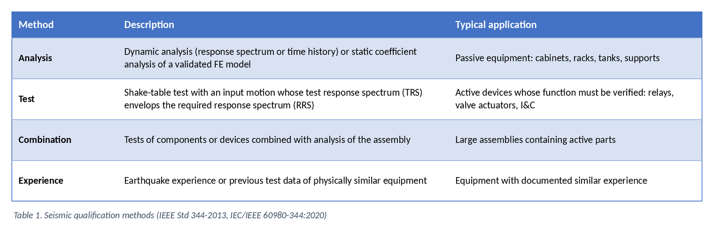
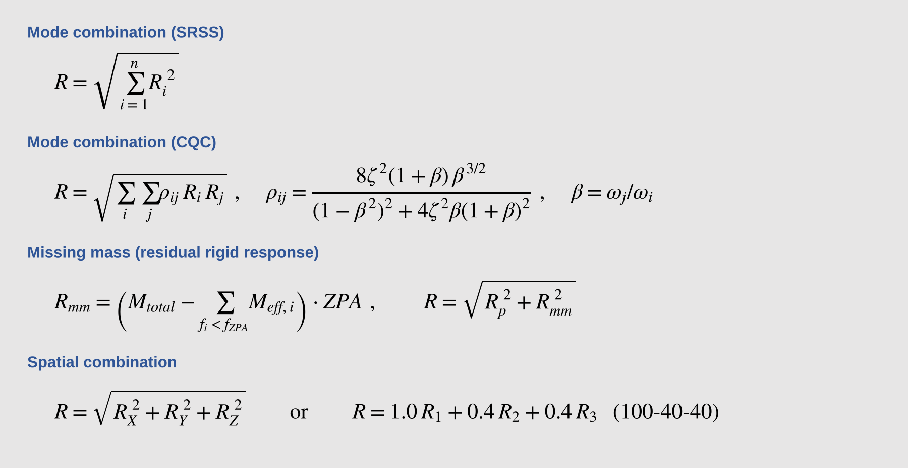
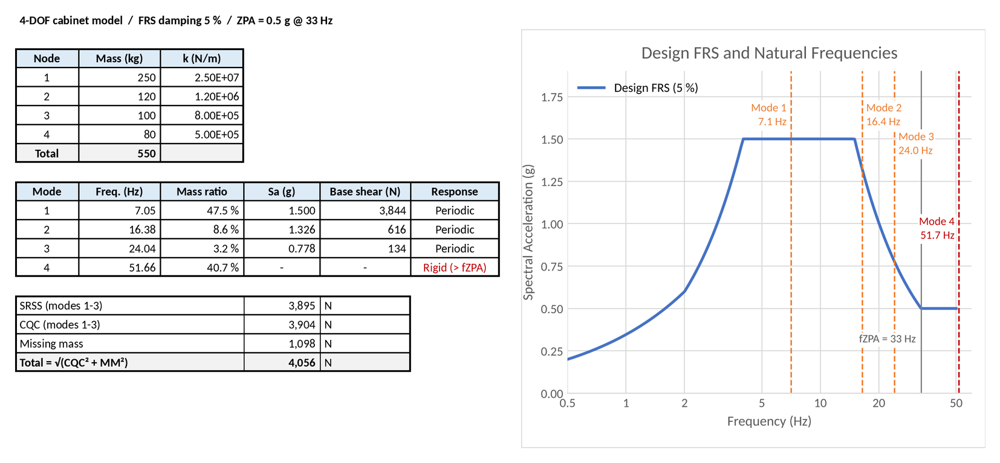
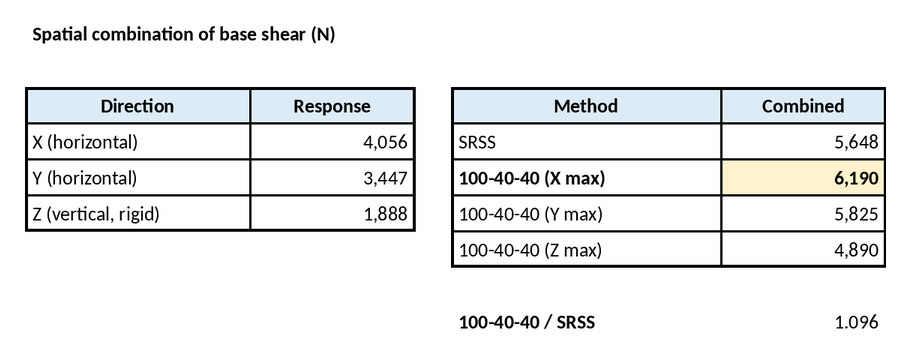

Safety-related equipment in a nuclear power plant must keep its structural integrity and perform its safety function during and after a design basis earthquake (SSE). This is demonstrated by seismic qualification according to IEEE Std 344 (now IEC/IEEE 60980-344). Qualification can be done by analysis, by test, by a combination of both, or by experience data. Analysis is generally used for passive equipment such as cabinets, racks, tanks and supports, while active devices whose function must be confirmed are usually qualified by shake-table testing.

For equipment qualified by analysis, the response spectrum method is the most common approach. In ANSYS Mechanical, a Modal analysis is solved first to obtain the natural frequencies, mode shapes and effective masses of the FE model. A Response Spectrum analysis is then linked to the modal solution, and the floor response spectra (FRS) for the X, Y and Z directions are applied at the anchorage with the specified damping. The modal responses are combined (SRSS or CQC), the residual rigid response is added with the missing mass option, and the three directional results are combined. Finally, stresses, anchor bolt loads and deflections are compared with the allowable values.

Each mode reaches its peak response at a different time, so the modal peaks cannot simply be added. For well-separated modes the SRSS rule is used, and when modes are closely spaced (frequencies within 10 % of each other for damping of 2 % or less) the CQC method accounts for the correlation between modes. Modes above the ZPA frequency respond rigidly, in phase with the input. Their contribution is included with the missing mass method, which RG 1.92 Rev. 3 describes as the only acceptable method for high-frequency modal contributions. The responses to the three earthquake directions are combined by SRSS, or by the 100-40-40 rule as an alternative.

A simple 4-DOF lumped-mass model of a cabinet (total mass 550 kg) is analyzed with a design FRS (5 % damping, ZPA 0.5 g at 33 Hz). Modes 1 to 3 are below the ZPA frequency and are combined with CQC (3,904 N), while mode 4 at 51.7 Hz, which carries 40.7 % of the mass, is treated as rigid through the missing mass (1,098 N). The total base shear in the X direction is 4,056 N, about 4 % larger than the modal result alone. In the spatial combination, the 100-40-40 rule gives a result about 10 % higher than SRSS.


Try the SRS Analysis Tool